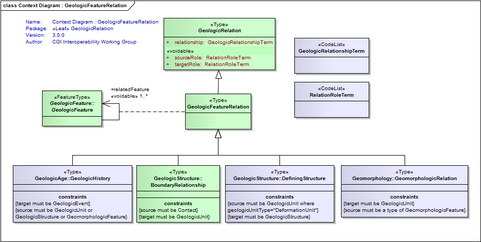
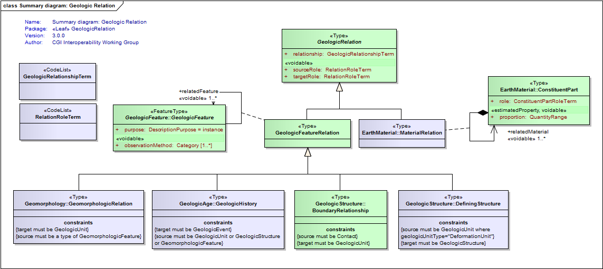

Package GeoSciML-Core/GeologicRelation
The GeoSciML GeologicRelation package contains the root relation class.
Geologic Relations are typed, directed associations between geologic objects. Represents any of a wide variety of relationships that can exist between two or more Features or other entities. For example, the GeologicRelation "intrudes" is a relationship between an intrusive igneous rock and some host rock. Includes spatial, temporal, sequence, correlation, and parent/child relations.
Class Summary |
|
| <<Type>> Classes | |
GeologicFeatureRelation
<<Type>>
|
The GeologicFeatureRelation class is a concrete subtype of the abstract GeologicRelation class that is used to define relationships between geologic features, ie. structure-structure, unit-unit, and structure-unit relationships. Relationships are always binary and directional. There is always a single source and a single target. The relationship is always defined from the perspective of the Source and is generally an active verb. Example: a Source may point to an intrusive igneous rock body. In this case, the Target would point to the appropriate host rock body and the relationship attribute would be 'intrudes'. Other appropriate relationship attributes might include: overlies, offsets, crosscuts, folds, etc. Two or more GeologicFeatures are associated in a GeologicFeatureRelation; each has a role in the relationship. Examples of geological roles include "overlies", "is overlain by", "is younger", "is older", "intrudes", "is intruded by", and so forth. In a relationship where an igneous unit intrudes a sedimentary unit, the geological relationship is "intrudes", the intruded sedimentary unit has the role "host", and the igneous unit has the role "intrusion". |
GeologicRelation
<<Type>>
|
The GeologicRelation class is an abstract class that defines the general structure used to define relationships between any feature or object within GeoSciML. Relationships are always binary and directional. There is always a single source and a single target. The relationship is always defined from the perspective of the Source and is generally an active verb. Example: a Source may point to an intrusive igneous rock body. In this case, the Target would point to the appropriate host rock body and the relationship attribute would be 'intrudes'. Other appropriate relationship attributes might include: overlies, offsets, crosscuts, folds, etc. Many other types of relationships can also be accommodated via GeologicRelation, for example, topological relations between spatial objects could be described where they are scientifically significant. |
| <<CodeList>> Classes | |
GeologicRelationshipTerm
<<CodeList>>
|
Refers to a vocabulary of terms describing a relationships between geologic features or objects |
RelationRoleTerm
<<CodeList>>
|
Refers to a vocabulary of terms describing roles played by geologic features or objects in a geologic relationship |
Tagged Values |
||
| Tag | Value | Notes |
| xsdDocument | geologicRelation.xsd | Description: Name of an XML Schema document to create representing the content of this package |
| xsdEncodingRule | iso19136_2007 | Values: iso19136_2007 | iso19139_2007 | iso19136_2007_INSPIRE_Extensions Default: iso19136_2007 Description: XML Schema encoding rule to apply |
UML Diagram: Context Diagram : GeologicFeatureRelation

UML Diagram: Summary diagram: Geologic Relation
